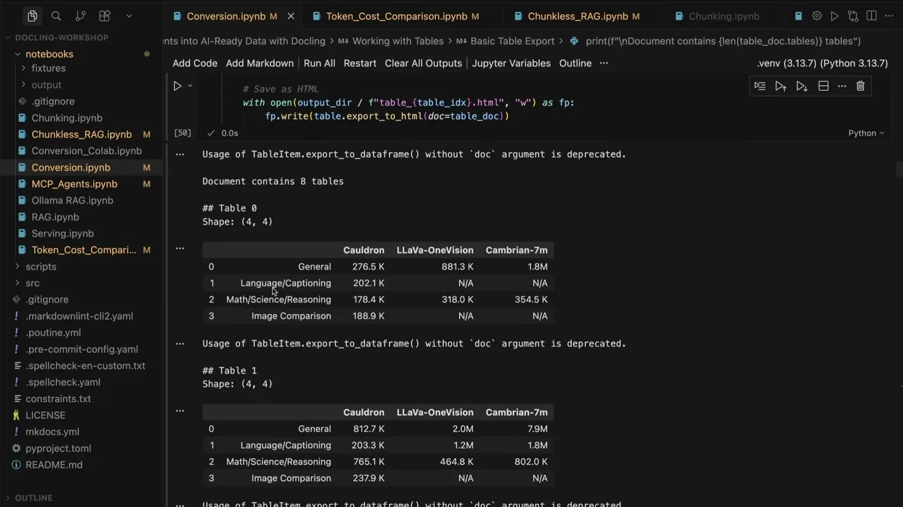
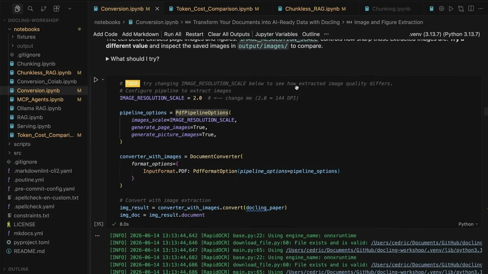
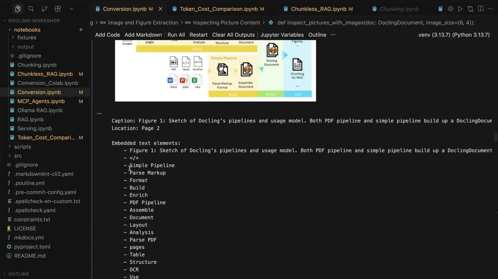
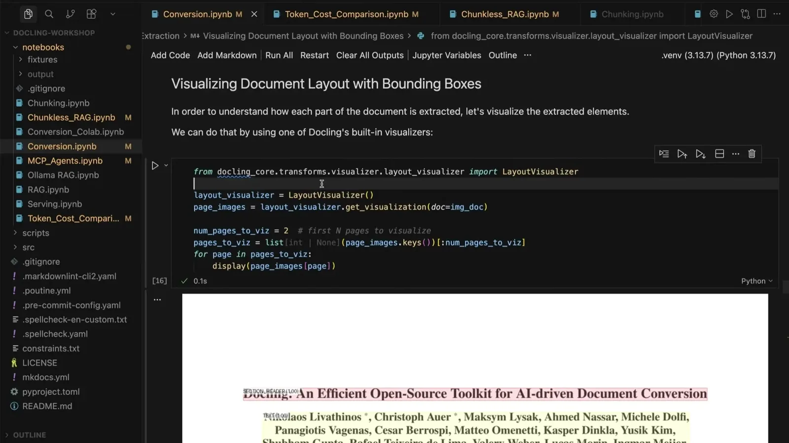
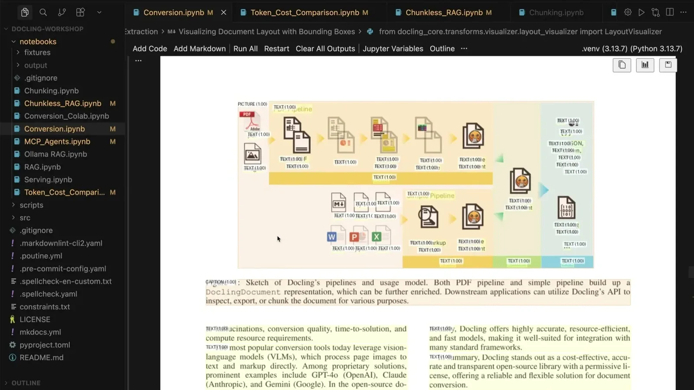
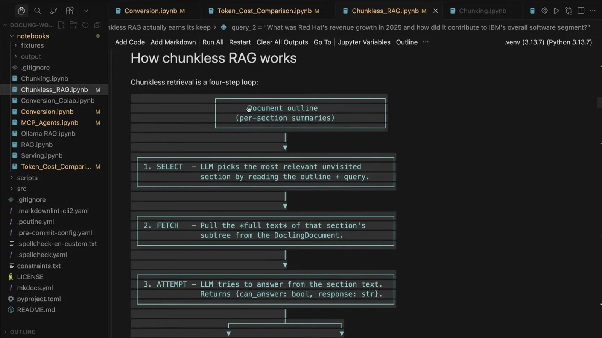

Structuring the Unstructured
Demonstrates Docling, an open-source local document-processing tool that converts PDFs, tables, and images into markdown/JSON/Pydantic for RAG or agent pipelines, with a specific cost comparison against sending documents to frontier visi...
If you only read one thing
- A viral example of PDF-to-text merging errors ('two words from two different columns') propagated a nonsensical term into 20 scientific papers, illustrating the cost of bad document parsing.
- Docling (Linux Foundation project) converts PDFs, tables, and images to markdown/JSON/Pydantic locally via OCR and vision models, without needing a GPU, and a Hugging Face comparison found it 50x cheaper than naive VLM/OCR extraction at scale.
- Docling supports 'chunkless RAG,' where the retrieval index is the document's own markdown outline rather than a vector database, and can be deployed as a REST API (docling serve) or accessed by agents through an MCP server.
This traces the local extraction-to-deployment path described in the talk, including the 50x cost comparison against sending documents to a frontier VLM (ours).


Why document processing accuracy matters
- The speaker opens with unstructured data (PDFs, contracts, scanned documents, tables, images) as a 'new context layer for AI' that most teams struggle to convert into LLM-usable formats.
- He cites a viral example where a scanned PDF merged two words from separate columns into a nonsensical term that was then propagated by AI-assisted writing into 20 scientific papers and cited further.
“20 scientific papers now feature a new nonsensical term that doesn't exist because AI misinterpreted a very old article that was scanned and taken to a PDF”
said at 03:07“Jensen from Nvidia made this point super clear at his keynote that unstructured data is becoming this new context layer for AI”
said at 01:02Simple parsers and frontier-model extraction both have costs
- A simple PDF parser demo showed truncated and merged text with an unreadable table and no image content extracted.
- Sending documents to frontier models for extraction produces better quality but is expensive (he cites roughly $30 per million output tokens) and can be inconsistent between model versions, since models are non-deterministic.
“If I'm sending this to a model that's maybe $30 per million output tokens, you can see how this can get quite expensive as I scale this up to dozens or hundreds”
said at 04:40Docling as a local, open-source middle ground
- Docling, part of the Linux Foundation, is a CLI/library that converts PDFs and other formats to markdown, JSON, or Pydantic data types locally using OCR and vision models, without requiring a GPU.
- A Hugging Face comparison of processing common-crawl PDFs found Docling on GPU/CPU delivered 50x cost savings compared to naive VLM and OCR extraction, and it can also produce structured output (e.g., pulling just a bill number and total price from an invoice).
“the two comparisons he did using GPU and using CPU for DocLing allowed him to do this at 50 times of a cost savings compared to VLMs and OCR naively”
said at 07:45“we've seen that we can take a PDF into format like Markdown or JSON with a fully local operation from our own machine without even needing a GPU”
said at 19:11Chunkless RAG and scaling to production
- Docling supports a pattern where the retrieval index is the document's own markdown section outline rather than embeddings in a vector database, letting an LLM iterate over sections to find relevant text (demonstrated on an 8-page paper and an IBM annual report with 418 sections).
- For scale, Docling can run as a REST API via 'docling serve' or be exposed to coding agents through a Docling MCP server for automated document conversion and extraction.
“we're doing RAG but without having to use a chunker or embedding model or vector database, etc., etc. So the index ends up being the markdown outline of the document”
said at 14:35“we can deploy docling as a REST API service using something that's known as docling serve. This allows us to scale things up and to run this as a microservice”
said at 16:39Commentary (ours)
The 50x cost-savings figure comes from one external comparison (Hugging Face's Leandro) on a specific fineweb-PDF extraction task, not a general benchmark, so it should be read as directional rather than a universal multiplier (ours).










Underlying detail — every claim, typed and timestamped (7)
| Stance | Claim | t |
|---|---|---|
| warns | A scanned PDF merged two words from separate columns into a nonsensical term that AI-assisted writing then propagated into 20 scientific papers, which were further cited. | 03:07 |
| asserts | Jensen (Nvidia) has stated unstructured data is becoming the new context layer for AI. | 01:02 |
| warns | Sending documents to frontier models for extraction can cost around $30 per million output tokens, which gets expensive at scale across thousands of PDFs. | 04:40 |
| asserts | A Hugging Face comparison of common-crawl PDF extraction found Docling delivered 50x cost savings compared to naive VLM and OCR extraction. | 07:45 |
| asserts | Docling can process documents locally without needing a GPU. | 19:11 |
| asserts | Docling enables chunkless RAG where the retrieval index is the document's own markdown outline instead of a vector database of embeddings. | 14:35 |
| recommends | Docling can be deployed as a REST API service (docling serve) for scale and exposed to AI agents through a Docling MCP server. | 16:39 |
Machine-readable copy embedded in this page (script#ontology) and in the corpus ontology.